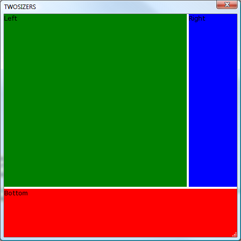

HtmlHost Example 4: Creating htmlhost with Horizontal and Vertical Sizers
This example combines the previous two examples to demonstract a horizontal & a vertical slider in the same htmlhost region.
dim html as c = <<%html%
<html>
<head>
<style>
<!--
.vsizer {
background-color:ThreeDHighlight;
behavior:clickable;
cursor:n-resize;
height:4px;
}
.hsizer {
background-color:ThreeDHighlight;
behavior:clickable;
cursor:w-resize;
width:4px;
height:100%%;
}
-->
</style>
</head>
<body id="body">
<div style="height:100%%;flow:horizontal;">
<div id="top" style="width:100%%;min-height:1in;height:100%%;background-color:green;" >Left</div>
<div class="hsizer" a5:target="hsizer" id="hsizer"
a5:target_elem="right" a5:target_adjust="-" ></div>
<div id="right" style="width:1in;height:100%%;background-color:blue; " >Right</div>
</div>
<div class="vsizer" style="width:100%;" a5:target="vsizer" id="fobar"
a5:target_elem="bottom" a5:target_adjust="-" ></div>
<div id="bottom" style="width:100%;height:1in;background-color:red;">Bottom</div>
</body>
</html>
%html%
ui_dlg_box("TWOSIZERS",<<%dlg%
{size=width=5in;height=5in}
{stretch=width,height}
{htmlhost=html};
%dlg%)